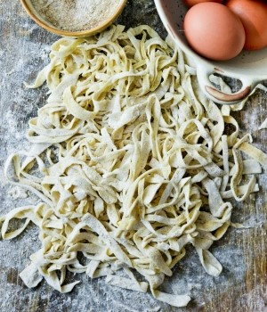

Homemade Pasta

Description
This recipe contains a list of ingredients and steps to make homemade pasta enough for 4 servings.
Ingredients
- 2 cups of flour
- 3 eggs
- 2 tablespoons olive oil
- 1 teaspoon salt
Steps
- Mix flour, eggs, olive oil, and salt in a bowl until combined.
- Add water, 1 teaspoon at a time, to flour mixture until a smooth, thick dough forms.
- Turn dough out onto a lightly floured work surface and knead for 10 minutes. Let dough rest for 5 to 10 minutes.
- Divide dough into 8 balls; use a manual pasta machine to roll and cut dough into desired pasta shape.
How To Cook Homemade Pasta
Bring a large pot of generously salted water to a boil, then add the uncooked pasta and stir. Cook until the pasta is al dente (until it has a slight bite). It should take no more than 4-6 minutes.